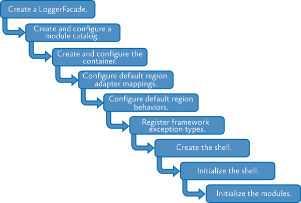

Initializing Applications Using the Prism Library for WPF
This topic addresses what needs to happen to get a Prism for WPF application up and running. A Prism application requires registration and configuration during the application startup process—this is known as bootstrapping the application. The Prism bootstrapping process includes creating and configuring a module catalog, creating a dependency injection container such as Unity, configuring default region adapter for UI composition, creating and initializing the shell view, and initializing modules.
What Is a Bootstrapper?
A bootstrapper is a class that is responsible for the initialization of an application built using the Prism Library. By using a bootstrapper, you have more control of how the Prism Library components are wired up to your application.
The Prism Library includes a default abstract Bootstrapper base class that can be specialized for use with any container. Many of the methods on the bootstrapper classes are virtual methods. You can override these methods as appropriate in your own custom bootstrapper implementation.

Basic stages of the bootstrapping process.
The Prism Library provides some additional base classes, derived from Bootstrapper, that have default implementations that are appropriate for most applications. The only stages left for your application bootstrapper to implement are creating and initializing the shell.
Dependency Injection
Applications built with the Prism Library rely on dependency injection provided by a container. The library provides assemblies that work with the Unity Application Block (Unity) or Managed Extensibility Framework (MEF), and it allows you to use other dependency injection containers. Part of the bootstrapping process is to configure this container and register types with the container.
The Prism Library includes the UnityBootstrapper and MefBootstrapper classes, which implement most of the functionality necessary to use either Unity or MEF as the dependency injection container in your application. In addition to the stages shown in the previous illustration, each bootstrapper adds some steps specific to its container.
Creating the Shell
In a traditional Windows Presentation Foundation (WPF) application, a startup Uniform Resource Identifier (URI) is specified in the App.xaml file that launches the main window.
In an application created with the Prism Library, it is the bootstrapper's responsibility to create the shell or the main window. This is because the shell relies on services, such as the Region Manager, that need to be registered before the shell can be displayed.
Key Decisions
After you decide to use the Prism Library in your application, there are a number of additional decisions that need to be made:
- You will need to decide whether you are using MEF, Unity, or another container for your dependency injection container. This will determine which provided bootstrapper class you should use and whether you need to create a bootstrapper for another container.
- You should think about the application-specific services you want in your application. These will need to be registered with the container.
- Determine whether the built-in logging service is adequate for your needs or if you need to create another logging service.
- Determine how modules will be discovered by the application: via explicit code declarations, code attributes on the modules discovered via directory scanning, configuration, or XAML.
The rest of this topic provides more details.
Core Scenarios
Creating a startup sequence is an important part of building your Prism application. This section describes how to create a bootstrapper and customize it to create the shell, configure the dependency injection container, register application level services, and how to load and initialize the modules.
Creating a Bootstrapper for Your Application
If you choose to use either Unity or MEF as your dependency injection container, creating a simple bootstrapper for your application is easy. You will need to create a new class that derives from either MefBootstrapper or UnityBootstrapper. Then, implement the CreateShell method. Optionally, you may override the InitializeShell method for shell specific initialization.
Implementing the CreateShell Method
The CreateShell method allows a developer to specify the top-level window for a Prism application. The shell is usually the MainWindow or MainPage. Implement this method by returning an instance of your application's shell class. In a Prism application, you can create the shell object, or resolve it from the container, depending on your application's requirements.
An example of using the ServiceLocator to resolve the shell object is shown in the following code example.
protected override DependencyObject CreateShell()
{
return ServiceLocator.Current.GetInstance<Shell>();
}
Note: You will often see the ServiceLocator being used to resolve instances of types instead of the specific dependency injection container. The ServiceLocator is implemented by calling the container, so it makes a good choice for container agnostic code. You can also directly reference and use the container instead of the ServiceLocator.
Implementing the InitializeShell Method
After you create a shell, you may need to run initialization steps to ensure that the shell is ready to be displayed. For WPF applications, you will create the shell application object and set it as the application's main window, as shown here (from the Modularity QuickStarts for WPF).
protected override void InitializeShell()
{
Application.Current.MainWindow = Shell;
Application.Current.MainWindow.Show();
}
The base implementation of InitializeShell does nothing. It is safe to not call the base class implementation.
Creating and Configuring the Module Catalog
If you are building a module application, you will need to create and configure a module catalog. Prism uses a concrete IModuleCatalog instance to keep track of what modules are available to the application, which modules may need to be downloaded, and where the modules reside.
The Bootstrapper provides a protected ModuleCatalog property to reference the catalog as well as a base implementation of the virtual CreateModuleCatalog method. The base implementation returns a new ModuleCatalog; however, this method can be overridden to provide a different IModuleCatalog instance instead, as shown in the following code from the QuickStartBootstrapper in the Modularity with MEF for WPF QuickStart.
protected override IModuleCatalog CreateModuleCatalog()
{
// When using MEF, the existing Prism ModuleCatalog is still
// the place to configure modules via configuration files.
return new ConfigurationModuleCatalog()
}
In both the UnityBootstrapper and MefBootstrapper classes, the Run method calls the CreateModuleCatalog method and then sets the class's ModuleCatalog property using the returned value. If you override this method, it is not necessary to call the base class's implementation because you will replace the provided functionality. For more information about modularity, see "Modular Application Development."
Creating and Configuring the Container
Containers play a key role in an application created with the Prism Library. Both the Prism Library and the applications built on top of it depend on a container for injecting required dependencies and services. During the container configuration phase, several core services are registered. In addition to these core services, you may have application-specific services that provide additional functionality as it relates to composition.
Core Services
The following table lists the core non-application specific services in the Prism Library.
| Service interface | Description |
|---|---|
| IModuleManager | Defines the interface for the service that will retrieve and initialize the application's modules. |
| IModuleCatalog | Contains the metadata about the modules in the application. The Prism Library provides several different catalogs. |
| IModuleInitializer | Initializes the modules. |
| IRegionManager | Registers and retrieves regions, which are visual containers for layout. |
| IEventAggregator | A collection of events that is loosely coupled between the publisher and the subscriber. |
| ILoggerFacade | A wrapper for a logging mechanism, so you can choose your own logging mechanism. The Stock Trader Reference Implementation (Stock Trader RI) uses the Enterprise Library Logging Application Block, via the EnterpriseLibraryLoggerAdapter class, as an example of how you can use your own logger. The logging service is registered with the container by the bootstrapper's Run method, using the value returned by the CreateLogger method. Registering another logger with the container will not work; instead override the CreateLogger method on the bootstrapper. |
| IServiceLocator | Allows the Prism Library to access the container. If you want to customize or extend the library, this may be useful. |
There are two Bootstrapper-derived classes available in Prism, the UnityBootstrapper and the MefBootstrapper. Creating and configuring the different containers involve similar concepts that are implemented differently.
Creating and Configuring the Container in the UnityBootstrapper
The UnityBootstrapper class's CreateContainer method simply creates and returns a new instance of a UnityContainer. In most cases, you will not need to change this functionality; however, the method is virtual, thereby allowing that flexibility.
After the container is created, it probably needs to be configured for your application. The ConfigureContainer implementation in the UnityBootstrapper registers a number of core Prism services by default, as shown here.
Note: An example of this is when a module registers module-level services in its Initialize method.
// UnityBootstrapper.cs
protected virtual void ConfigureContainer()
{
...
if (useDefaultConfiguration)
{
RegisterTypeIfMissing(typeof(IServiceLocator), typeof(UnityServiceLocatorAdapter), true);
RegisterTypeIfMissing(typeof(IModuleInitializer), typeof(ModuleInitializer), true);
RegisterTypeIfMissing(typeof(IModuleManager), typeof(ModuleManager), true);
RegisterTypeIfMissing(typeof(RegionAdapterMappings), typeof(RegionAdapterMappings), true)
RegisterTypeIfMissing(typeof(IRegionManager), typeof(RegionManager), true);
RegisterTypeIfMissing(typeof(IEventAggregator), typeof(EventAggregator), true);
RegisterTypeIfMissing(typeof(IRegionViewRegistry), typeof(RegionViewRegistry), true);
RegisterTypeIfMissing(typeof(IRegionBehaviorFactory), typeof(RegionBehaviorFactory), true);
RegisterTypeIfMissing(typeof(IRegionNavigationJournalEntry), typeof(RegionNavigationJournalEntry), false);
RegisterTypeIfMissing(typeof(IRegionNavigationJournal), typeof(RegionNavigationJournal), false);
RegisterTypeIfMissing(typeof(IRegionNavigationService), typeof(RegionNavigationService), false);
RegisterTypeIfMissing(typeof(IRegionNavigationContentLoader), typeof(UnityRegionNavigationContentLoader), true);
}
}
The bootstrapper's RegisterTypeIfMissing method determines whether a service has already been registered—it will not register it twice. This allows you to override the default registration through configuration. You can also turn off registering any services by default; to do this, use the overloaded Bootstrapper.Run method passing in false. You can also override the ConfigureContainer method and disable services that you do not want to use, such as the event aggregator.
Note: If you turn off the default registration, you will need to manually register required services.
To extend the default behavior of ConfigureContainer, simply add an override to your application's bootstrapper and optionally call the base implementation, as shown in the following code from the QuickStartBootstrapper from the Modularity for WPF (with Unity) QuickStart. This implementation calls the base class's implementation, registers the ModuleTracker type as the concrete implementation of IModuleTracker, and registers the callbackLogger as a singleton instance of CallbackLogger with Unity.
protected override void ConfigureContainer()
{
base.ConfigureContainer();
this.RegisterTypeIfMissing(typeof(IModuleTracker), typeof(ModuleTracker), true);
this.Container.RegisterInstance<CallbackLogger>(this.callbackLogger);
}
Creating and Configuring the Container in the MefBootstrapper
The MefBootstrapper class's CreateContainer method does several things. First, it creates an AssemblyCatalog and a CatalogExportProvider. The CatalogExportProvider allows the MefExtensions assembly to provide default exports for a number of Prism types and still allows you to override the default type registration. Then CreateContainer creates and returns a new instance of a CompositionContainer using the CatalogExportProvider. In most cases, you will not need to change this functionality; however, the method is virtual, thereby allowing that flexibility.
After the container is created, it needs to be configured for your application. The ConfigureContainer implementation in the MefBootstrapper registers a number of core Prism services by default, as shown in the following code example. If you override this method, consider carefully whether you should invoke the base class's implementation to register the core Prism services, or if you will provide these services in your implementation.
protected virtual void ConfigureContainer()
{
this.RegisterBootstrapperProvidedTypes();
}
protected virtual void RegisterBootstrapperProvidedTypes()
{
this.Container.ComposeExportedValue<ILoggerFacade>(this.Logger);
this.Container.ComposeExportedValue<IModuleCatalog>(this.ModuleCatalog);
this.Container.ComposeExportedValue<IServiceLocator>(new MefServiceLocatorAdapter(this.Container));
this.Container.ComposeExportedValue<AggregateCatalog>(this.AggregateCatalog);
}
Note: In the MefBootstrapper, the core services of Prism are added to the container as singletons so they can be located through the container throughout the application.
In addition to providing the CreateContainer and ConfigureContainer methods, the MefBootstrapper also provides two methods to create and configure the AggregateCatalog used by MEF. The CreateAggregateCatalog method simply creates and returns an AggregateCatalog object. Like the other methods in the MefBootstrapper, CreateAggregateCatalog is virtual and can be overridden if necessary.
The ConfigureAggregateCatalog method allows you to add type registrations to the AggregateCatalog imperatively. For example, the QuickStartBootstrapper from the Modularity with MEF QuickStart explicitly adds ModuleA and ModuleC to the AggregateCatalog, as shown here.
protected override void ConfigureAggregateCatalog()
{
base.ConfigureAggregateCatalog();
// Add this assembly to export ModuleTracker
this.AggregateCatalog.Catalogs.Add(
new AssemblyCatalog(typeof(QuickStartBootstrapper).Assembly));
// Module A is referenced in in the project and directly in code.
this.AggregateCatalog.Catalogs.Add(
new AssemblyCatalog(typeof(ModuleA.ModuleA).Assembly));
this.AggregateCatalog.Catalogs.Add(
new AssemblyCatalog(typeof(ModuleC.ModuleC).Assembly));
// Module B and Module D are copied to a directory as part of a post-build step.
// These modules are not referenced in the project and are discovered by inspecting a directory.
// Both projects have a post-build step to copy themselves into that directory.
DirectoryCatalog catalog = new DirectoryCatalog("DirectoryModules");
this.AggregateCatalog.Catalogs.Add(catalog);
}
More Information
For more information about MEF, AggregateCatalog, and AssemblyCatalog, see Managed Extensibility Framework Overview on MSDN.